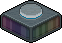

|
|
|
Fragen aus der Community
Ist es möglich Hintergrundtoner der Reihe nach mit Zeitvorgabe und lückenlos abzuspielen?
Frage von: cooperx27
Frage von: cooperx27
|
 Hintergrundtoner
|
Ja. Sehen wir uns zunächst die Funktionsweise an:
Es gibt 3 Einstellungsregler: Farbton, Sättigung und Helligkeit. Der Farbton bestimmt die Farbe an sich.
Die Sättigung bestimmt die Farbintensität oder wie bunt eine Farbe ist.
Die Helligkeit bestimmt den schwarz-weiß Inhalt einer Farbe.
Der Ein/Aus Knopf aktiviert oder deaktiviert den Toner.
Der Anwenden Knopf übernimmt die aktuelle Einstellung.
Damit Hintergrundtoner abgespielt werden können, müssen alle Toner aktiviert sein. Entweder drückt man dafür auf den Ein/Aus Knopf oder man schaltet es mit Wired ein. Z. B. mit Posi- oder Umschalt-Effekt.
Dann können die verschiedenen Farben eingestellt und angewendet (auf Anwenden drücken) werden. Die Farben werden alle einzeln in Posi-Effekte gespeichert.
Um eine Reihenfolge zu bilden, muss ein Stapel den nächsten erlauben auszulösen. So etwas nennt man auch gerne Stapel-Reihe. Hierfür können Leuchtbälle verwendet werden, die von einem Stapel zum nächsten gehen. Wenn ein Leuchtball vor einem Stapel liegt, wird dieser ausgelöst und der Stapel schickt die Kugel zum nächsten Stapel.
Mit der Bedingung "Ausgewähltes Möbelstück hat anderes auf sich" kann abgefragt werden, ob sich vor dem Stapel eine Kugel befindet oder nicht.
Die Zeitvorgabe kann mit Effekt wiederholen eingestellt werden. Jeder Stapel erhält diesen Auslöser. Wenn jede Farbe gleich lang angezeigt werden soll, dann muss in jedem Effekt wiederholen dieselbe Zeit eingestellt werden. Dann ist die Einstellung fertig.
Wenn aber jede Farbe ihre eigene Anzeige-Zeit erhalten soll, dann wird der Effekt "Timer zurücksetzen" benötigt. Außerdem wird zusätzlich die Bedingung "Mehr als x Sekunden sind vergangen" gebraucht. Beide Wireds werden für jeden Stapel benötigt. Der zurücksetzen Effekt sorgt dafür, dass Effekt wiederholen immer bei 0 s startet und "richtig" zählt. Und die Bedingung verhindert, dass bei 0 s sofort ausgelöst wird. Normalerweise würde Effekt wiederholen nur zur eingestellten Zeit auslösen, außer der Auslöser wird mit dem Effekt Timer zurücksetzen resettet, dann löst es bei 0 s aus.
Die Anzeige-Zeiten werden durch Effekt wiederholen definiert. Dabei ist es wichtig zu beachten, dass das Effekt wiederholen des nächsten Stapels bestimmt wie lange die Farbe des vorherigen Stapels angezeigt werden soll. Die verschiedenen Zeiten im Effekt wiederholen können natürlich völlig frei angepasst werden:
Das Endergebnis: